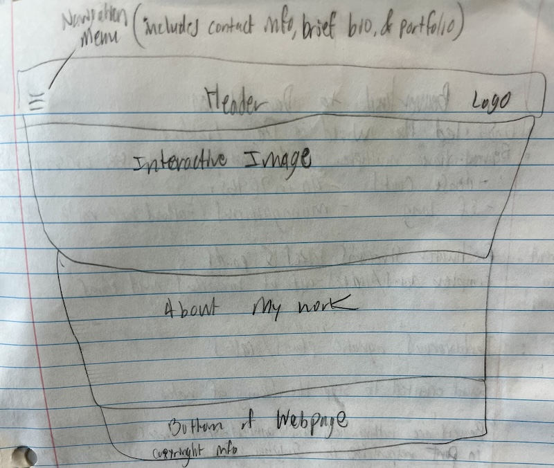

For my entry point strategy, I was aiming to inform the user as quick as possible about what the website is about. By putting the home page as the first navigational option, I believe the user will have no trouble navigating to the home page. I organized the other navigational options, about page, inspo page, hierarchy exercise page, and the sketchbook page in a sequence that displays a story of my webpage educational journey. Learning what the coding is for navigating to and from webpages, helped me feel more confident in my ability to build a solid, working navigational structure for my website and future website creating endeavors. The most difficult aspect of building the navigation was working under the pressure of meeting the deadline, anxiety rose when I was adding the sketchbook page, due to my typo in visual studio code of navigating back to the hierarchy exercise page from the sketchbook. I was only able to correct the typo after realizing how fast I was going, consciously reminding myself to read the code carefully, eventually I found and corrected the typo. Going forward, I aim to take my time when reading the code, proof-reading for any typos or omissions of crucial tags. Thinking ahead regarding the site growing larger, I anticipate a need for simplifying the navigational menu, possibly leaving only 4 options, perhaps adding a logo, that will serve as the ‘home page’ button.
This week's project consisted of creating css code to style the navigation on the landing page. The placement of the navigation menu being centered is meant to bring attention to the options for users. I prefer the center alignment over aligning it to the left, because it gives the other information more breathing room, allowing for a smoother reading experience. I chose to use a simple link back to the landing page, for the CSS Basics page and pageTwo. Mainly because I didn't have adequate time to change the font style and color of the link. I think keeping consistency with the landing page links and their placement in the top left helps users locate the link more efficiently, opposed to if I were to center it or align it to the right.
During the revision of the landing page to my website. I felt a little overwhelmed with the image of my wireframe and having a reflection on the home page. I kept thinking about what the user of my website would feel or think. I imagine the user would be an employer or a college professor viewing my website as a project that complements my graphic design portfolio. In thinking like this, I wanted to make the navigating of the website smoother and less crammed with visuals. Helping the user comprehend what kind of website they are viewing more efficiently. My wireframe for the landing page has different elements than what the current page looks like, but I'm happy with the minimal approach that is currently at. Minimizing the options for the navigation menu, helped with narrowing down the hierarchy of information. Consolidating all the projects, like 'css basics', 'hierarchy', 'mid-century modern blog', and the reflections all into the 'Sketchbook' link helped create more visual negative space on all the page's navigation menu. I still want to create a drop down pancake stack icon menu, to add more visual negative space on each page. Adjusting the hierarchy and importance of the reflections, about me paragraph, and intro paragraph on the home page. Also, to create cohesion, I want to use the same css for each main page on the site, designating exploration and experimenting to the project pages.